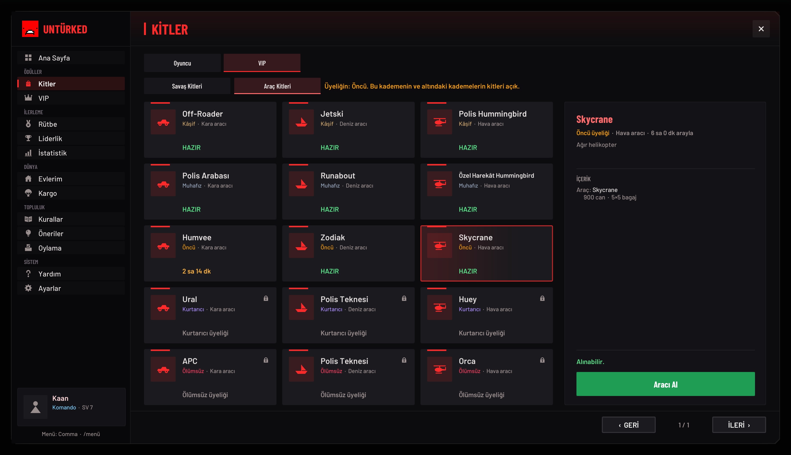
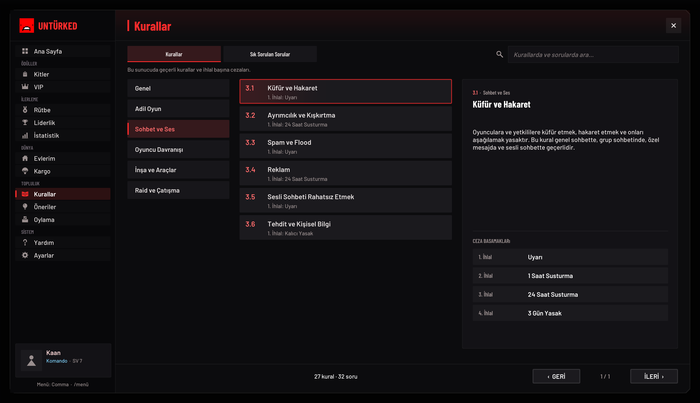
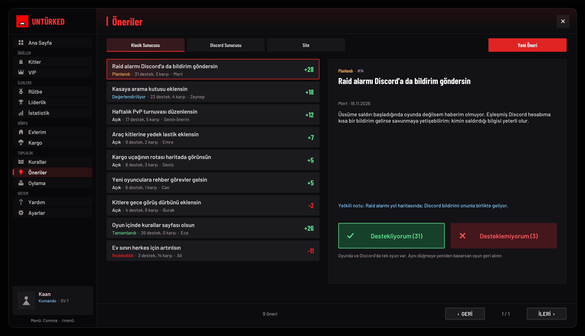

Kendi geliştirdiğimiz tek bir eklentiyle çalışan iki Unturned sunucusu, oyunla bağlantılı bir Discord botu ve
yakında açılacak bir web sitesi. Hazır eklenti kullanılmıyor; her sistem bu ağ için yazıldı. Sunucumuz bir süredir
kapalıydı ve yeniden açılıyor: önce Klasik, birkaç hafta sonra Market.
2sunucu: shoplu Market, shopsuz Klasik
30+modül, tek eklentide
30özel arayüz paneli, Steam Atölyesi'nden
1hesap: üyelik, rütbe ve ceza iki sunucuda ortak
2dil: Türkçe ve İngilizce
Sunucular ve Sistemleri
İki sunucu aynı eklentiyle çalışır; hangi sistemin açık olduğunu sunucunun profili belirler. Aşağıda her sunucuda
çalışan sistemlerin tamamı ayrı ayrı yazıyor.
Beş kademe: Kâşif, Muhafız, Öncü, Kurtarıcı, Ölümsüz
Kişisel ve kademe kasaları, oyunun depo panelinde
Kademeye göre kasa boyutu ve ev sınırı
İlerleme
On iki basamaklı XP rütbe merdiveni
Oynama süresine göre rütbe: Çırak, Kalfa, Usta, Emektar
Liderlik tabloları ve kişisel istatistikler
Dünya
Kargo zamanlayıcısı ve kargo menüsü
İnşa bölgeleri
Işınlanma
Yatak tabanlı evler
Işınlanma isteği (TPA)
Arayüz
Tek tuşla açılan tam ekran menü
Oyuncu kartı, sunucu şeridi, can göstergesi, pusula ve silah göstergesi
Hasar, ölüm ve giriş akışları
Karşılama penceresi ve oyuncu ayarları
Topluluk
Kurallar ve sık sorulan sorular sayfası
Öneriler: destek ve karşı oyu, yetkili durumu
Oyun içi oylamalar
Sohbet önekleri ve tanıtım duyuruları
Güvenlik ve Yönetim
Kendi hile korumamız
Kayıtlı ceza sistemi: uyarı, susturma, atma, yasak
Oyuncu raporları
Yönetim paneli ve komut rehberi
Oyun güncellemesini izleyen otomatik güncelleme
Oyun İçi Arayüz
Menüler oyunun kendi arayüz sistemiyle çiziliyor ve Steam Atölyesi'nden dağıtılıyor: oyuncu sunucuya girdiğinde
arayüz kendiliğinden iniyor, ek bir şey kurmuyor. Her sayfa aynı çerçevede; kapalı sistemlerin sayfası menüde
görünmüyor.

KitlerVIP sekmesinde araç kitleri: her kademeye bir kara, deniz ve hava aracı. Kademe rengi, kilit, bekleme süresi
ve aracın can ve bagaj bilgisi sunucudan anlık yazılıyor.

Kurallar ve Sık Sorulan SorularHer kuralın ceza basamakları görünüyor; arama iki sekmede birlikte çalışıyor. Discord'daki ve sitedeki
kurallar aynı kaynaktan geliyor.

ÖnerilerOyuncular öneri yazıyor, ötekiler destekliyor ya da karşı oy veriyor; yetkili durumu ve notu ekliyor.
Sonuçlanan öneriler listenin sonunda kalıyor.
Görüntüler oyundaki menülerin kendisidir; Klasik'te bir oyuncunun gördüğü hâl. Oyuncu adları, oylar ve öneriler
örnektir.
Discord Botu
Kendi yazdığımız bot oyunla aynı veritabanını kullanıyor: oyun sunucusu kapalıyken verilen bir ödül kaybolmuyor,
sunucu açılınca teslim ediliyor.
Oyun Köprüsü
Oyun sohbeti, giriş ve çıkışlar, raporlar ve cezalar Discord kanallarında
Discord'dan oyuna duyuru ve yönetim komutları
Canlı sunucu durumu paneli ve sayaçlar
Steam hesabı eşleme ve rütbe rolleri
Sunucu listesindeki Discord düğmesi için süresiz davet
Topluluk
Karşılama, davet takibi ve oryantasyon
Otomatik rol
Oyun içi ödüllü çekilişler
Öneri kanalı ve vitrin
Güncelleme notları
Moderasyon
Küfür ve reklam süzgeci
Kayıt tutma
Oyuncu raporları
Destek biletleri
Yalnızca kendi sunucumuzda çalışan, kilitli bot
Yakında
Web Sitesi
Sunucular ve canlı durum
Kurallar, yardım ve sık sorulan sorular; oyundakiyle aynı kaynak
Güncelleme notları
Steam ile giriş ve Discord hesabı bağlama
Üyelik mağazası ve hesap sayfası
Türkçe, İngilizce ve Rusça
Altyapı
Tek eklenti (OpenMod) ve tek PostgreSQL: iki sunucu, bot ve site aynı veriyi kullanıyor
Her sunucu kendi Docker konteynerinde
Oyun güncellemesi çıkınca sunucular kendiliğinden güncelleniyor
Arayüz Steam Atölyesi'nden dağıtılıyor
Hedef: İstanbul'da Ryzen 9 9950X işlemcili VDS, Ubuntu 24.04
Sponsor Görünürlüğü
Sponsorumuz oyuncunun ağla karşılaştığı her yerde görünür: sunucuyu bulduğu listeden oyun içi menüye, Discord'dan
siteye kadar.
Steam Sunucu Listesi
Sunucu sayfasında tıklanabilir sponsor düğmesi ve sunucu açıklamasında sponsor ibaresi.
Oyun İçi
Karşılama penceresinde ve menüde sponsor alanı; düzenli aralıklarla tanıtım duyurusu.
Kampanya Duyurusu
Sponsorun oyunculara özel kampanyası ya da indirim kodu oyunda, Discord'da ve sitede duyurulur.
Discord
Sponsor duyurusu ve kalıcı tanıtım alanı.
Web Sitesi
Açıldığı günden itibaren sponsor alanı ve bağlantı.
Duyuru ve Rapor
Açılış duyurusunda ve güncelleme notlarında anılma; istenirse aylık oyuncu ve Discord üye sayıları.